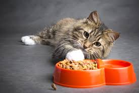

O QUE COMEM OS GATOS SELVAGENS?
Os gatos alimenta-se de presas como ratos,pássaros,pequenos mamíferos,répteis.
Mas,isto não significa
que só coma carne, contudo esta é a base e a maior parte da sua dieta, também se alimentam de plantas e frutos.
Além disso os gatos vadios subsistem alimentando-se do que podem, em muitos casos, são os restos e
desperdícios de nossa comida que encontram no lixo.
E OS GATOS DOMÉSICOS?
A melhor comida para teu gato é a que mais e assemelha às suas origens, quer dizer a uma
dieta carnívora.
O alimento que escolheres para ele deve ter um alto teor de ingredientes
de origem animal para satisfazer as sua necessidades biológicas.
Muitos alimentos para gatos são feitos à base de cereais e contêm muito pouca carne, por isso
é importante que revejas a sua composição antes de escolher um.
Dois tipos de alimentos principais: SECO E HÚMIDO
Seco- é ideal como base para a sua dieta, pois a sua textura crocante ajuda a remover o
tártaro durante a mastigação e mantêm os dentes e gengivas saudáveis.
COMIDA HÚMIDA: não é ideal como alimento único nem como base da dieta mas sim é recomendável
inclui-lo menu do gato já que lhes acrescenta um extra de hidratação.
